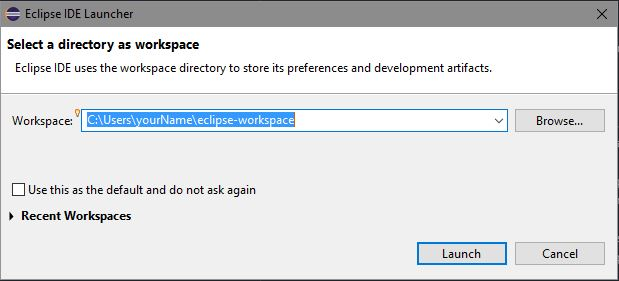
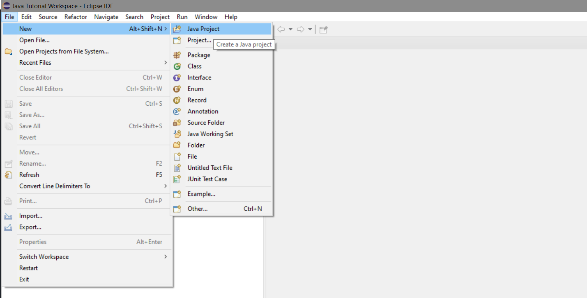
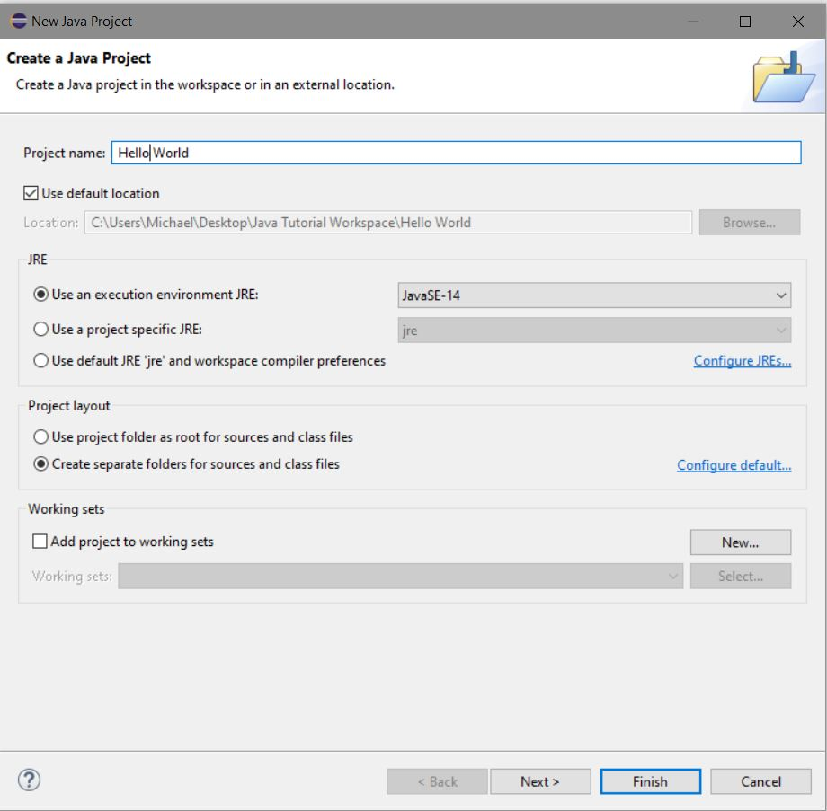
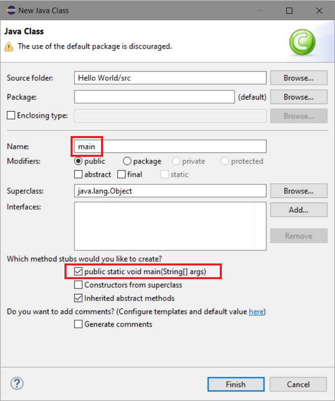
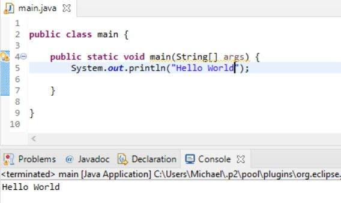
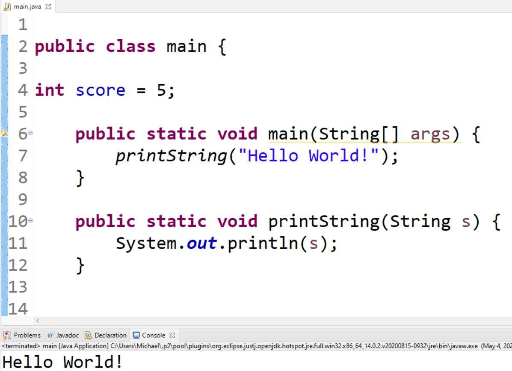
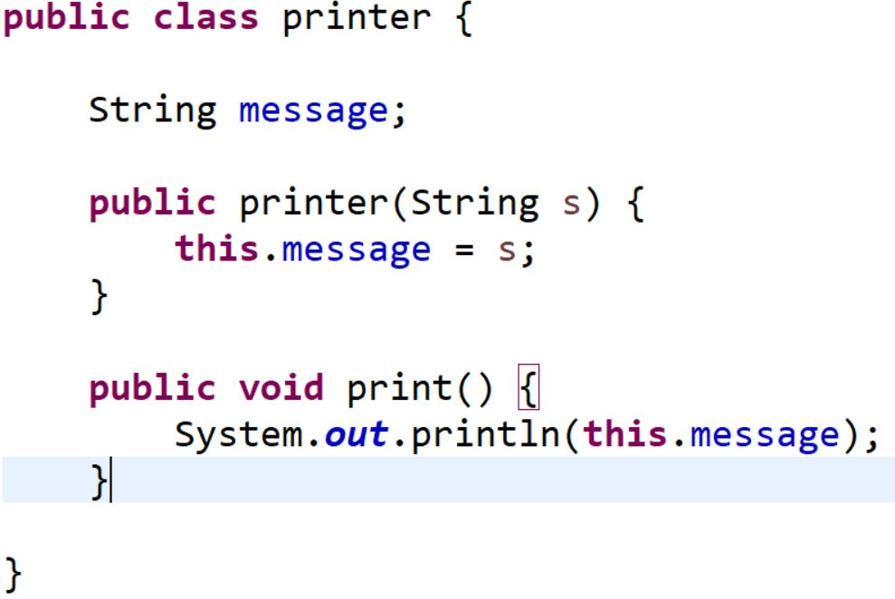
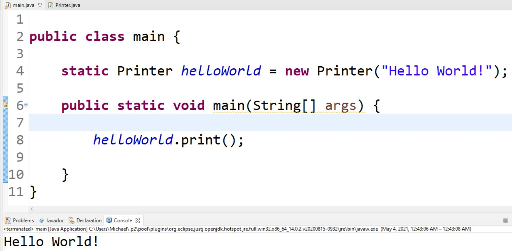

Basic Java Tutorial
What is Java?
Java is a class-based, object-oriented programming language and is what Minecraft was programmed in. In order to modify the game, we need to write code in Java that can communicate Minecraft's base code. One nice feature of Java is that it is extremely modular. OOP (Object Oriented Programming) involves creating a single model to use for multiple similar aspects of a program. For example, every item in Minecraft is of the Item class. We can create new instances of this class to make new items, and can extend this classes functionality in order to give a custom item special properties. For now, we will start by writing a "Hello World" program in Java. This will show the basics of Java.
Java "Hello World" Program
The first step to writing a "Hello World" program is to open our IDE, Eclipse. Upon launching, you should be prompted to select a workspace. This is simply where all of your project files will be stored on your computer. I recommend creating a new folder on your desktop for this purpose.
After you generate a new workspace, you should be greeted by the Eclipse welcome screen. For now, lets ignore this and proceed by heading to the file navigation option at the top left of the screen and navigating to New > Java Project.
You will be prompted to name your project. Use the settings shown here, however do not wory if your excecution environment is different. Ideally, you would be using JavaSE-16 as that is the most recent release as of writing this.
If you are asked about creating a module info file, ignore it. This is not important for this simple application. Now that we have created our project, you should be able to see a new project file with the title you selected that contains the JRE System Library and a folder called src. The system library is where all of Java's tools are stored. We can import these tools later in order to make full use of them. We now have to create a class file that will contain our main method. Java will execute all code in the main method after we run our program. This becomes important when we start seperating our code into multiple different files as part of OOP. To create a class file, right click on the src folder and navigate to New > Class. Name the class "main" and be sure to check the box to create a "public static void main(String[] args)" method stub.
We can now move on to writing our "Hello World" program. Inside our newly created main.java file, we see two declarations that Eclipse has auto-generated. The first declares this file as a public class by the name of main. This basically is just defining the name of the file and saying that it can be accessed by any other file in our program. The second is the method stub that we created earlier. Notice how curly braces are used to encompass the code that a certain class or function contains. Anything inside the curly braces of the main method is what will run when we start our program. To print "Hello World" to the console, we need to type in the following line of code below our main method.
After running the program using the green arrow in the top of Ecipse, we can see that we have used the print function of System to write to the console.
Variables in Java
There are lots of different variable types in Java. In order to define a variable, you must define its type, its name, and its value. See the example below for defining an Integer called "score" with an initial value of 5.
Below, you can find a full list of all primitive variable types in Java and their declarations. These are defined in much the same way as the example shown above. Each can store a specific type of data and are each useful in specific circumstances.

There also exist non-primite data types like Strings, Arrays, and Classes which we will not get into on this page.
Functions and Methods
Functions are very similar to cooking recipies. They take in a set of ingredients, an input, and modify those ingredients to get a specific output. They can be used over and over again to achieve a specific result several times. For example, we might have a function that prints our "hello world" message to the console. This way, we don't have to worry about writing the same line of code multiple times. An example of a function that does this is shown below.
As you can see, this function takes an input (in this case a String which we refer to as s) and uses System to print it to the console. Notice the keywords in front of our function declaration. As with the main method, we use public, static, and void. This is because we want everyone to be able to access it, we don't want it to change, and we don't want it to return a specific value. More on functions that return objects or variables in a later tutorial.
Classes and Introduction to OOP
Finally, we are going to take a quick peak into classes. In order to keep this section short, I have intentionally cut off the majority of information about classes. This is to keep information limited to what we will use in these tutorials. If you want more information, I recommend searching online for tutorials in this or any of the other subjects that we have talked about up until this point.
Classes are one of the most important aspects of creating our Minecraft mod and being able to manipulate them will be vital to our modding experience. We can create a new class by making the following declaration.
In this case, we have created a class that contains a String variable called message and has a method called print that will print that string. Notice that there is a method here that shares the class name. This is called a constuctor. They define what information we need to give the program in order to instatiate a new instance of our class. In this case, we tell the computer that in order to make this class, we must provide a String. In addition, the constuctor sets the message String of THIS specific object to the String we passed into the constuctor. The "this" keywork is important because it indicates we want to affect only one instance of the object and not every printer object. Now, lets use our object in our main method.
As you can see, we defined a new static Printer object called "helloWorld" and passed the string "Hello World!" into the constuctor. Then when we called the string method of the helloWorld object, we printed the message that we passed into the constuctor. Its okay if this is a little bit confusing, it will make more sense as we start to progress into the world of modding!